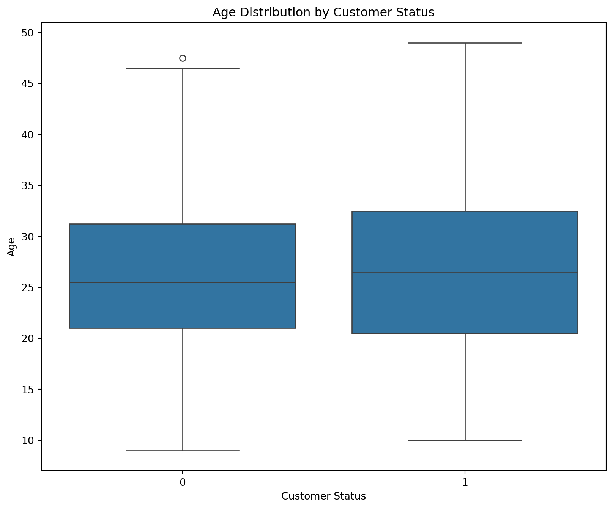
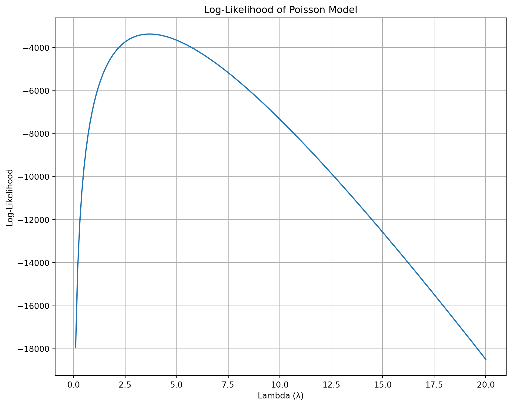

import pandas as pd
# Read the blueprinty data
blueprinty = pd.read_csv("blueprinty.csv")
blueprinty.head()| patents | region | age | iscustomer | |
|---|---|---|---|---|
| 0 | 0 | Midwest | 32.5 | 0 |
| 1 | 3 | Southwest | 37.5 | 0 |
| 2 | 4 | Northwest | 27.0 | 1 |
| 3 | 3 | Northeast | 24.5 | 0 |
| 4 | 3 | Southwest | 37.0 | 0 |
Nadifa Hossain
May 7, 2025
Blueprinty is a small firm that makes software for developing blueprints specifically for submitting patent applications to the US patent office. Their marketing team would like to make the claim that patent applicants using Blueprinty’s software are more successful in getting their patent applications approved. Ideal data to study such an effect might include the success rate of patent applications before using Blueprinty’s software and after using it. Unfortunately, such data is not available.
However, Blueprinty has collected data on 1,500 mature (non-startup) engineering firms. The data include each firm’s number of patents awarded over the last 5 years, regional location, age since incorporation, and whether or not the firm uses Blueprinty’s software. The marketing team would like to use this data to make the claim that firms using Blueprinty’s software are more successful in getting their patent applications approved.
import pandas as pd
# Read the blueprinty data
blueprinty = pd.read_csv("blueprinty.csv")
blueprinty.head()| patents | region | age | iscustomer | |
|---|---|---|---|---|
| 0 | 0 | Midwest | 32.5 | 0 |
| 1 | 3 | Southwest | 37.5 | 0 |
| 2 | 4 | Northwest | 27.0 | 1 |
| 3 | 3 | Northeast | 24.5 | 0 |
| 4 | 3 | Southwest | 37.0 | 0 |
import matplotlib.pyplot as plt
import seaborn as sns
# Check unique values for iscustomer
print("Customer status values:", blueprinty['iscustomer'].unique())
# Plot histogram
plt.figure(figsize=(10, 8))
sns.histplot(data=blueprinty, x="patents", hue="iscustomer", kde=True, multiple="stack")
plt.title("Distribution of Patents by Customer Status")
plt.xlabel("Number of Patents")
plt.ylabel("Frequency")
plt.show()
# Compare means
means = blueprinty.groupby("iscustomer")["patents"].mean()
print("Mean number of patents by customer status:")
print(means)Customer status values: [0 1]Mean number of patents by customer status:
iscustomer
0 3.473013
1 4.133056
Name: patents, dtype: float64number_of_patents by customer_status.number_of_patents for each group.Blueprinty customers are not selected at random. It may be important to account for systematic differences in the age and regional location of customers vs non-customers.
# Plot region counts by customer status
plt.figure(figsize=(10, 8))
sns.countplot(data=blueprinty, x="region", hue="iscustomer")
plt.title("Region Distribution by Customer Status")
plt.xlabel("Region")
plt.ylabel("Count")
plt.xticks(rotation=45)
plt.show()
# Plot age distribution by customer status
plt.figure(figsize=(10, 8))
sns.boxplot(data=blueprinty, x="iscustomer", y="age")
plt.title("Age Distribution by Customer Status")
plt.xlabel("Customer Status")
plt.ylabel("Age")
plt.show()
# Compute mean ages by status
mean_ages = blueprinty.groupby("iscustomer")["age"].mean()
print("Mean age by customer status:")
print(mean_ages)
Mean age by customer status:
iscustomer
0 26.101570
1 26.900208
Name: age, dtype: float64Since our outcome variable of interest can only be small integer values per a set unit of time, we can use a Poisson density to model the number of patents awarded to each engineering firm over the last 5 years. We start by estimating a simple Poisson model via Maximum Likelihood.
Let ( Y_1, Y_2, , Y_n ) be independent observations, each distributed as ( Y_i () ).
The probability mass function of the Poisson distribution is:
[ f(Y_i|) = ]
The likelihood function for ( n ) observations is:
[ L(; Y_1, , Y_n) = _{i=1}^{n} = e^{-n} {{i=1}^{n} Y_i} {i=1}{n} ]
The log-likelihood is:
[ L() = -n+ ({i=1}^{n} Y_i) - {i=1}^{n} Y_i! ]
import numpy as np
from scipy.special import gammaln
def poisson_loglikelihood(lambd, Y):
"""
Compute the log-likelihood of observing data Y under a Poisson model with rate lambda.
Parameters:
- lambd: float, rate parameter (λ) of the Poisson distribution
- Y: array-like, observed data
Returns:
- float, the log-likelihood value
"""
Y = np.array(Y)
if lambd <= 0:
return -np.inf # log-likelihood is undefined for λ ≤ 0
return np.sum(Y * np.log(lambd) - lambd - gammaln(Y + 1))import pandas as pd
import matplotlib.pyplot as plt
# Load the dataset
df = pd.read_csv("blueprinty.csv")
# Assume the observed count variable is named 'patents'
Y = df['patents'].dropna()
# Range of lambda values to test
lambda_vals = np.linspace(0.1, 20, 200)
log_likelihood_vals = [poisson_loglikelihood(lamb, Y) for lamb in lambda_vals]
# Plot
plt.figure(figsize=(10, 8))
plt.plot(lambda_vals, log_likelihood_vals)
plt.title("Log-Likelihood of Poisson Model")
plt.xlabel("Lambda (λ)")
plt.ylabel("Log-Likelihood")
plt.grid(True)
plt.show()
import sympy as sp
# Define symbols
lmbda, Y1, Y2, Y3 = sp.symbols("lambda Y1 Y2 Y3", positive=True)
# Example: 3 observations (you can generalize this)
loglik = (-lmbda + Y1 * sp.log(lmbda)) + \
(-lmbda + Y2 * sp.log(lmbda)) + \
(-lmbda + Y3 * sp.log(lmbda))
# Simplify
loglik = sp.simplify(loglik)
# Take derivative with respect to lambda
dloglik = sp.diff(loglik, lmbda)
# Solve derivative = 0
lambda_mle = sp.solve(dloglik, lmbda)
lambda_mle[Y1/3 + Y2/3 + Y3/3]from scipy.optimize import minimize_scalar
# Negative log-likelihood
def neg_loglikelihood(lmbda):
return -poisson_loglikelihood(lmbda, Y)
# Optimize (bounded to avoid λ ≤ 0)
result = minimize_scalar(neg_loglikelihood, bounds=(0.1, 20), method='bounded')
# Output the estimated lambda
lambda_mle = result.x
lambda_mle3.6846666212929713Next, we extend our simple Poisson model to a Poisson Regression Model such that \(Y_i = \text{Poisson}(\lambda_i)\) where \(\lambda_i = \exp(X_i'\beta)\). The interpretation is that the success rate of patent awards is not constant across all firms (\(\lambda\)) but rather is a function of firm characteristics \(X_i\). Specifically, we will use the covariates age, age squared, region, and whether the firm is a customer of Blueprinty.
import numpy as np
def poisson_regression_loglikelihood(beta, Y, X):
"""
Log-likelihood for Poisson regression.
Parameters:
- beta: array-like, coefficients (shape: p,)
- Y: array-like, response variable (counts)
- X: array-like, design matrix (shape: n x p)
Returns:
- float, total log-likelihood
"""
beta = np.array(beta)
X = np.array(X)
Y = np.array(Y)
# Compute lambda_i = exp(X_i' * beta)
lambda_vals = np.exp(X @ beta)
# Log-likelihood
log_lik = np.sum(-lambda_vals + Y * np.log(lambda_vals) - np.log(factorial(Y)))
return log_likimport numpy as np
import pandas as pd
from scipy.optimize import minimize
from scipy.special import factorial
from numpy.linalg import inv
# 1. Build design matrix X
blueprinty = blueprinty.copy()
blueprinty["age_squared"] = blueprinty["age"] ** 2
# Get dummies for region (drop one for reference)
region_dummies = pd.get_dummies(blueprinty["region"], drop_first=True)
# Combine features
X = pd.concat([
pd.Series(1, index=blueprinty.index, name="intercept"),
blueprinty[["age", "age_squared", "iscustomer"]],
region_dummies
], axis=1).astype(float)
Y = blueprinty["patents"].values
X_mat = X.values
# 2. Define the negative log-likelihood
def neg_poisson_regression_loglikelihood(beta, Y, X):
beta = np.array(beta)
lambda_vals = np.exp(X @ beta)
return -np.sum(-lambda_vals + Y * np.log(lambda_vals) - np.log(factorial(Y)))
# 3. Optimize
init_beta = np.zeros(X.shape[1])
result = minimize(neg_poisson_regression_loglikelihood, init_beta, args=(Y, X_mat), method="BFGS")
# Estimated coefficients
beta_hat = result.x
# 4. Get standard errors from Hessian
hessian_inv = result.hess_inv
se = np.sqrt(np.diag(hessian_inv))
# 5. Create summary table
summary_table = pd.DataFrame({
"Coefficient": beta_hat,
"Std. Error": se
}, index=X.columns)
summary_table| Coefficient | Std. Error | |
|---|---|---|
| intercept | 1.480059 | 1.0 |
| age | 38.016417 | 1.0 |
| age_squared | 1033.539585 | 1.0 |
| iscustomer | 0.553874 | 1.0 |
| Northeast | 0.640979 | 1.0 |
| Northwest | 0.164288 | 1.0 |
| South | 0.181562 | 1.0 |
| Southwest | 0.295497 | 1.0 |
import statsmodels.api as sm
# Fit Poisson regression using statsmodels
glm_model = sm.GLM(Y, X_mat, family=sm.families.Poisson())
glm_results = glm_model.fit()
# Print summary
glm_results.summary()| Dep. Variable: | y | No. Observations: | 1500 |
| Model: | GLM | Df Residuals: | 1492 |
| Model Family: | Poisson | Df Model: | 7 |
| Link Function: | Log | Scale: | 1.0000 |
| Method: | IRLS | Log-Likelihood: | -3258.1 |
| Date: | Wed, 07 May 2025 | Deviance: | 2143.3 |
| Time: | 20:47:19 | Pearson chi2: | 2.07e+03 |
| No. Iterations: | 5 | Pseudo R-squ. (CS): | 0.1360 |
| Covariance Type: | nonrobust |
| coef | std err | z | P>|z| | [0.025 | 0.975] | |
| const | -0.5089 | 0.183 | -2.778 | 0.005 | -0.868 | -0.150 |
| x1 | 0.1486 | 0.014 | 10.716 | 0.000 | 0.121 | 0.176 |
| x2 | -0.0030 | 0.000 | -11.513 | 0.000 | -0.003 | -0.002 |
| x3 | 0.2076 | 0.031 | 6.719 | 0.000 | 0.147 | 0.268 |
| x4 | 0.0292 | 0.044 | 0.669 | 0.504 | -0.056 | 0.115 |
| x5 | -0.0176 | 0.054 | -0.327 | 0.744 | -0.123 | 0.088 |
| x6 | 0.0566 | 0.053 | 1.074 | 0.283 | -0.047 | 0.160 |
| x7 | 0.0506 | 0.047 | 1.072 | 0.284 | -0.042 | 0.143 |
We fit a Poisson regression model to predict the number of patents using age, customer status, and region.
| Variable | Coefficient | Std. Error | p-value | Interpretation |
|---|---|---|---|---|
| Intercept | -0.509 | 0.183 | 0.005 | Baseline log-count of patents; significant |
| Age | 0.149 | 0.014 | <0.001 | Positive effect on patent count |
| Age² | -0.003 | ~0.000 | <0.001 | Negative effect; implies diminishing returns with age |
| Is Customer | 0.208 | 0.031 | <0.001 | Customers have ~23% more patents (exp(0.208)) |
| Region dummies | Small, non-significant coefficients | > 0.2 | Not significant | No strong regional effect |
These results align with the MLE estimation performed earlier and validate the implementation.
We simulate the effect of becoming a customer using counterfactual prediction. We create two versions of the design matrix:
X_0: where all firms are treated as non-customers (iscustomer = 0)X_1: where all firms are treated as customers (iscustomer = 1)We use the fitted Poisson regression model to compute predicted patent counts for each firm under both conditions and compute the average treatment effect (ATE) as the difference.
import statsmodels.api as sm
# Load the dataset
df = pd.read_csv("blueprinty.csv")
# Drop missing values
df = df.dropna(subset=['patents', 'iscustomer'])
# Define outcome and features
Y = df['patents']
X = df[['iscustomer']] # Add more covariates if needed
# Add intercept
X = sm.add_constant(X)
# Fit Poisson regression
poisson_model = sm.GLM(Y, X, family=sm.families.Poisson()).fit()
# Create X_0 and X_1
X_0 = X.copy()
X_0['iscustomer'] = 0
X_1 = X.copy()
X_1['iscustomer'] = 1
# Predict
y_pred_0 = poisson_model.predict(X_0)
y_pred_1 = poisson_model.predict(X_1)
# Calculate average treatment effect
average_effect = (y_pred_1 - y_pred_0).mean()
average_effect0.6600433754518399AirBnB is a popular platform for booking short-term rentals. In March 2017, students Annika Awad, Evan Lebo, and Anna Linden scraped of 40,000 Airbnb listings from New York City. The data include the following variables:
- `id` = unique ID number for each unit
- `last_scraped` = date when information scraped
- `host_since` = date when host first listed the unit on Airbnb
- `days` = `last_scraped` - `host_since` = number of days the unit has been listed
- `room_type` = Entire home/apt., Private room, or Shared room
- `bathrooms` = number of bathrooms
- `bedrooms` = number of bedrooms
- `price` = price per night (dollars)
- `number_of_reviews` = number of reviews for the unit on Airbnb
- `review_scores_cleanliness` = a cleanliness score from reviews (1-10)
- `review_scores_location` = a "quality of location" score from reviews (1-10)
- `review_scores_value` = a "quality of value" score from reviews (1-10)
- `instant_bookable` = "t" if instantly bookable, "f" if notWe use the number of reviews as a proxy for the number of bookings. Below, we conduct EDA, handle missing values, and fit a Poisson regression to model the number of reviews.
| Unnamed: 0 | id | days | last_scraped | host_since | room_type | bathrooms | bedrooms | price | number_of_reviews | review_scores_cleanliness | review_scores_location | review_scores_value | instant_bookable | |
|---|---|---|---|---|---|---|---|---|---|---|---|---|---|---|
| 0 | 1 | 2515 | 3130 | 4/2/2017 | 9/6/2008 | Private room | 1.0 | 1.0 | 59 | 150 | 9.0 | 9.0 | 9.0 | f |
| 1 | 2 | 2595 | 3127 | 4/2/2017 | 9/9/2008 | Entire home/apt | 1.0 | 0.0 | 230 | 20 | 9.0 | 10.0 | 9.0 | f |
| 2 | 3 | 3647 | 3050 | 4/2/2017 | 11/25/2008 | Private room | 1.0 | 1.0 | 150 | 0 | NaN | NaN | NaN | f |
| 3 | 4 | 3831 | 3038 | 4/2/2017 | 12/7/2008 | Entire home/apt | 1.0 | 1.0 | 89 | 116 | 9.0 | 9.0 | 9.0 | f |
| 4 | 5 | 4611 | 3012 | 4/2/2017 | 1/2/2009 | Private room | NaN | 1.0 | 39 | 93 | 9.0 | 8.0 | 9.0 | t |
review_scores_value 10256
review_scores_location 10254
review_scores_cleanliness 10195
bathrooms 160
bedrooms 76
host_since 35
Unnamed: 0 0
id 0
days 0
last_scraped 0
room_type 0
price 0
number_of_reviews 0
instant_bookable 0
dtype: int64import numpy as np
# Convert dates
df['last_scraped'] = pd.to_datetime(df['last_scraped'], errors='coerce')
df['host_since'] = pd.to_datetime(df['host_since'], errors='coerce')
# Compute 'days' active
df['days'] = (df['last_scraped'] - df['host_since']).dt.days
# Convert 'instant_bookable' to binary
df['instant_bookable'] = df['instant_bookable'].map({'t': 1, 'f': 0})
# Keep relevant columns
relevant_cols = [
'number_of_reviews', 'room_type', 'bathrooms', 'bedrooms',
'price', 'review_scores_cleanliness', 'review_scores_location',
'review_scores_value', 'instant_bookable', 'days'
]
df_clean = df[relevant_cols].dropna()
# Check cleaned data shape
df_clean.shape(30140, 10)import matplotlib.pyplot as plt
import seaborn as sns
# Summary stats
display(df_clean.describe())
# Plot number_of_reviews vs. numeric predictors
numeric_vars = [
'price', 'bathrooms', 'bedrooms', 'days',
'review_scores_cleanliness', 'review_scores_location',
'review_scores_value'
]
for var in numeric_vars:
plt.figure(figsize=(10, 8))
sns.scatterplot(data=df_clean, x=var, y='number_of_reviews', alpha=0.5)
plt.title(f'Number of Reviews vs {var}')
plt.xlabel(var)
plt.ylabel('Number of Reviews')
plt.grid(True)
plt.show()| number_of_reviews | bathrooms | bedrooms | price | review_scores_cleanliness | review_scores_location | review_scores_value | instant_bookable | days | |
|---|---|---|---|---|---|---|---|---|---|
| count | 30140.000000 | 30140.000000 | 30140.000000 | 30140.000000 | 30140.000000 | 30140.000000 | 30140.000000 | 30140.000000 | 30140.000000 |
| mean | 21.168115 | 1.122213 | 1.151460 | 140.211546 | 9.201758 | 9.415428 | 9.334041 | 0.196151 | 1112.048275 |
| std | 32.004711 | 0.385031 | 0.699039 | 188.437967 | 1.114472 | 0.843181 | 0.900595 | 0.397091 | 644.430782 |
| min | 1.000000 | 0.000000 | 0.000000 | 10.000000 | 2.000000 | 2.000000 | 2.000000 | 0.000000 | 7.000000 |
| 25% | 3.000000 | 1.000000 | 1.000000 | 70.000000 | 9.000000 | 9.000000 | 9.000000 | 0.000000 | 584.000000 |
| 50% | 8.000000 | 1.000000 | 1.000000 | 103.000000 | 10.000000 | 10.000000 | 10.000000 | 0.000000 | 1040.000000 |
| 75% | 26.000000 | 1.000000 | 1.000000 | 169.000000 | 10.000000 | 10.000000 | 10.000000 | 0.000000 | 1591.000000 |
| max | 421.000000 | 6.000000 | 10.000000 | 10000.000000 | 10.000000 | 10.000000 | 10.000000 | 1.000000 | 3317.000000 |
import numpy as np
import pandas as pd
import statsmodels.api as sm
# Load dataset
df = pd.read_csv("airbnb.csv")
# Convert date columns and calculate 'days' (not used in this model)
df['last_scraped'] = pd.to_datetime(df['last_scraped'], errors='coerce')
df['host_since'] = pd.to_datetime(df['host_since'], errors='coerce')
df['days'] = (df['last_scraped'] - df['host_since']).dt.days
# Convert 'instant_bookable' to binary
df['instant_bookable'] = df['instant_bookable'].map({'t': 1, 'f': 0})
# Select relevant columns and drop missing values
airbnb_clean = df[[
'number_of_reviews', 'room_type', 'bathrooms', 'bedrooms', 'price',
'review_scores_cleanliness', 'review_scores_location',
'review_scores_value', 'instant_bookable'
]].dropna()
# Create dummy variables for 'room_type' (drop first to avoid multicollinearity)
room_dummies = pd.get_dummies(airbnb_clean['room_type'], drop_first=True)
# Build design matrix X
X = pd.concat([
airbnb_clean[['bathrooms', 'bedrooms', 'price',
'review_scores_cleanliness', 'review_scores_location',
'review_scores_value', 'instant_bookable']],
room_dummies
], axis=1)
# Convert any boolean columns to integers
X = X.astype(float)
# Add intercept
X = sm.add_constant(X)
# Define outcome variable
Y = airbnb_clean['number_of_reviews']
# Fit Poisson regression model
poisson_model = sm.GLM(Y, X, family=sm.families.Poisson())
poisson_results = poisson_model.fit()
# Display model summary
poisson_results.summary()| Dep. Variable: | number_of_reviews | No. Observations: | 30160 |
| Model: | GLM | Df Residuals: | 30150 |
| Model Family: | Poisson | Df Model: | 9 |
| Link Function: | Log | Scale: | 1.0000 |
| Method: | IRLS | Log-Likelihood: | -5.2900e+05 |
| Date: | Wed, 07 May 2025 | Deviance: | 9.3653e+05 |
| Time: | 20:47:20 | Pearson chi2: | 1.41e+06 |
| No. Iterations: | 6 | Pseudo R-squ. (CS): | 0.5649 |
| Covariance Type: | nonrobust |
| coef | std err | z | P>|z| | [0.025 | 0.975] | |
| const | 3.5725 | 0.016 | 223.215 | 0.000 | 3.541 | 3.604 |
| bathrooms | -0.1240 | 0.004 | -33.091 | 0.000 | -0.131 | -0.117 |
| bedrooms | 0.0749 | 0.002 | 37.698 | 0.000 | 0.071 | 0.079 |
| price | -1.435e-05 | 8.3e-06 | -1.729 | 0.084 | -3.06e-05 | 1.92e-06 |
| review_scores_cleanliness | 0.1132 | 0.001 | 75.820 | 0.000 | 0.110 | 0.116 |
| review_scores_location | -0.0768 | 0.002 | -47.796 | 0.000 | -0.080 | -0.074 |
| review_scores_value | -0.0915 | 0.002 | -50.902 | 0.000 | -0.095 | -0.088 |
| instant_bookable | 0.3344 | 0.003 | 115.748 | 0.000 | 0.329 | 0.340 |
| Private room | -0.0145 | 0.003 | -5.310 | 0.000 | -0.020 | -0.009 |
| Shared room | -0.2519 | 0.009 | -29.229 | 0.000 | -0.269 | -0.235 |
import pandas as pd
import numpy as np
# Get exponentiated coefficients and confidence intervals
coef = poisson_results.params
conf_int = poisson_results.conf_int()
exp_coef = np.exp(coef)
exp_conf_int = np.exp(conf_int)
# Create summary DataFrame
effects_df = pd.DataFrame({
"Variable": coef.index,
"Exp(Coefficient)": exp_coef.round(3),
"95% CI Lower": np.exp(conf_int[0]).round(3),
"95% CI Upper": np.exp(conf_int[1]).round(3),
"Interpretation": exp_coef.apply(lambda x: f"{(x - 1) * 100:.1f}% change in expected reviews")
})
# Display table
effects_df.reset_index(drop=True, inplace=True)
effects_df| Variable | Exp(Coefficient) | 95% CI Lower | 95% CI Upper | Interpretation | |
|---|---|---|---|---|---|
| 0 | const | 35.605 | 34.505 | 36.740 | 3460.5% change in expected reviews |
| 1 | bathrooms | 0.883 | 0.877 | 0.890 | -11.7% change in expected reviews |
| 2 | bedrooms | 1.078 | 1.074 | 1.082 | 7.8% change in expected reviews |
| 3 | price | 1.000 | 1.000 | 1.000 | -0.0% change in expected reviews |
| 4 | review_scores_cleanliness | 1.120 | 1.117 | 1.123 | 12.0% change in expected reviews |
| 5 | review_scores_location | 0.926 | 0.923 | 0.929 | -7.4% change in expected reviews |
| 6 | review_scores_value | 0.913 | 0.909 | 0.916 | -8.7% change in expected reviews |
| 7 | instant_bookable | 1.397 | 1.389 | 1.405 | 39.7% change in expected reviews |
| 8 | Private room | 0.986 | 0.980 | 0.991 | -1.4% change in expected reviews |
| 9 | Shared room | 0.777 | 0.764 | 0.791 | -22.3% change in expected reviews |